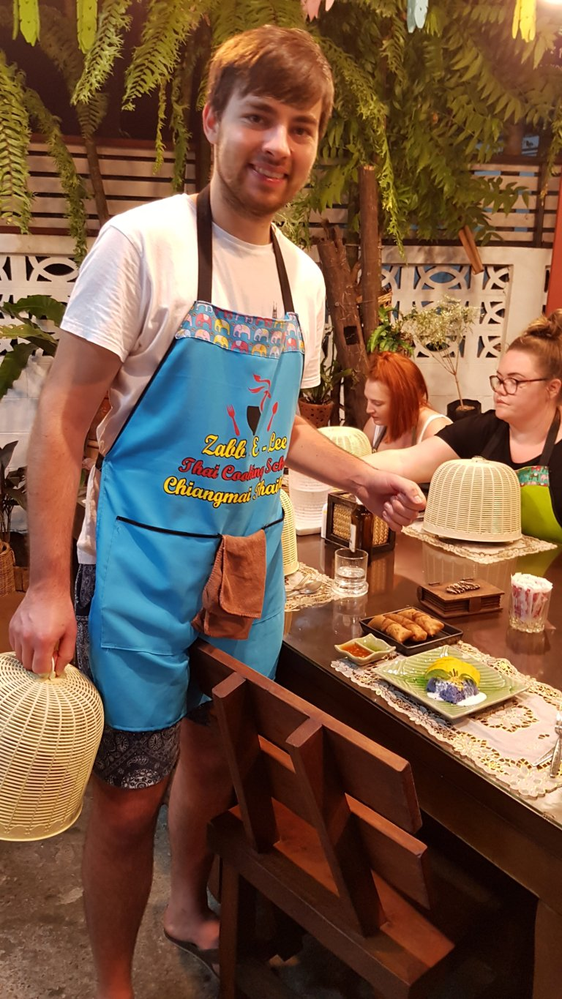
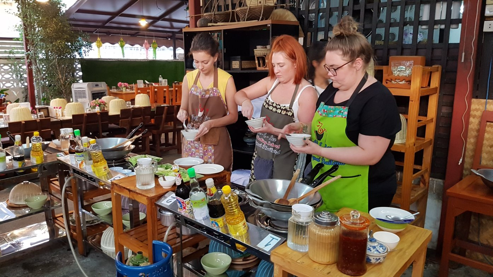
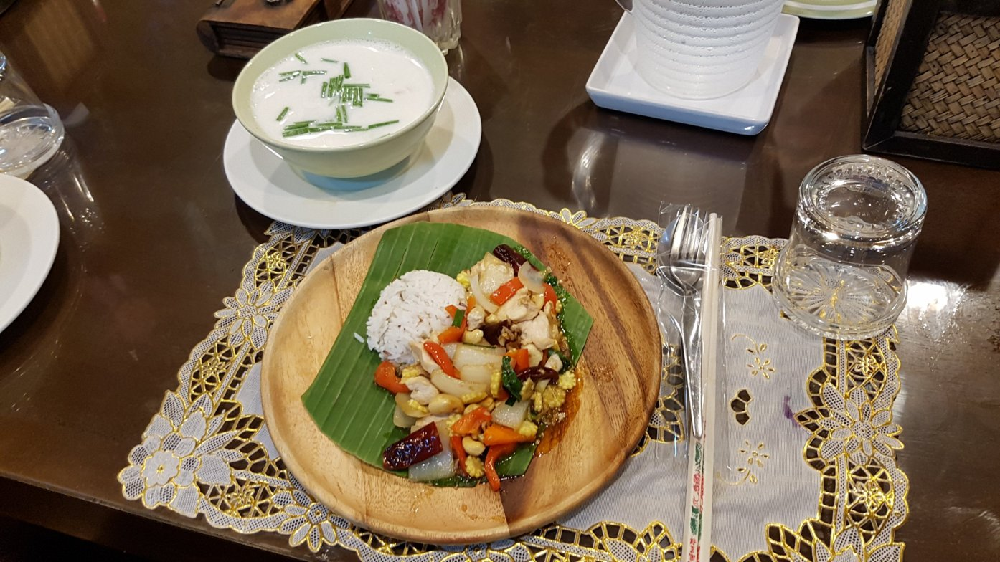
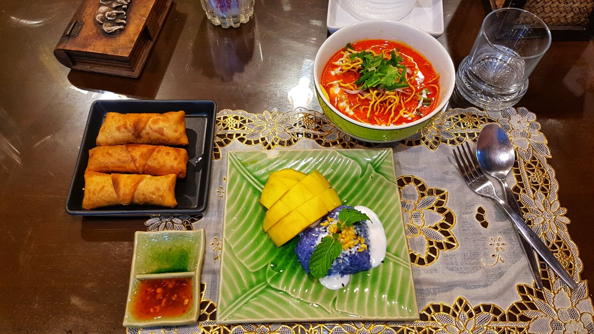

Tra le mille attività che si possono fare a Chiang Mai, ci è stato proposto anche un corso di cucina thailandese.
Prima di iniziare a cucinare abbiamo fatto una sosta ad un mercato locale per conoscere ed acquistare gli ingredienti che avremmo poi utilizzato per cucinare i nostri piatti thai.
Il corso di cucina prevedeva la preparazione di ben 5 piatti thailandesi a testa. Noi abbiamo scelto di preparare (e mangiare 😛 ) : spring rolls, cashew nut with chicken, tom kha kai soup, stuffed cabbage soup, green curry paste, khao soy and sticky rice with mango as dessert.
 Ognuno aveva a disposizione un Wok, e sotto l’attenta osservazione della nostra maestra di cucina abbiamo preparato vari piatti tipici locali.
 
Comment Section